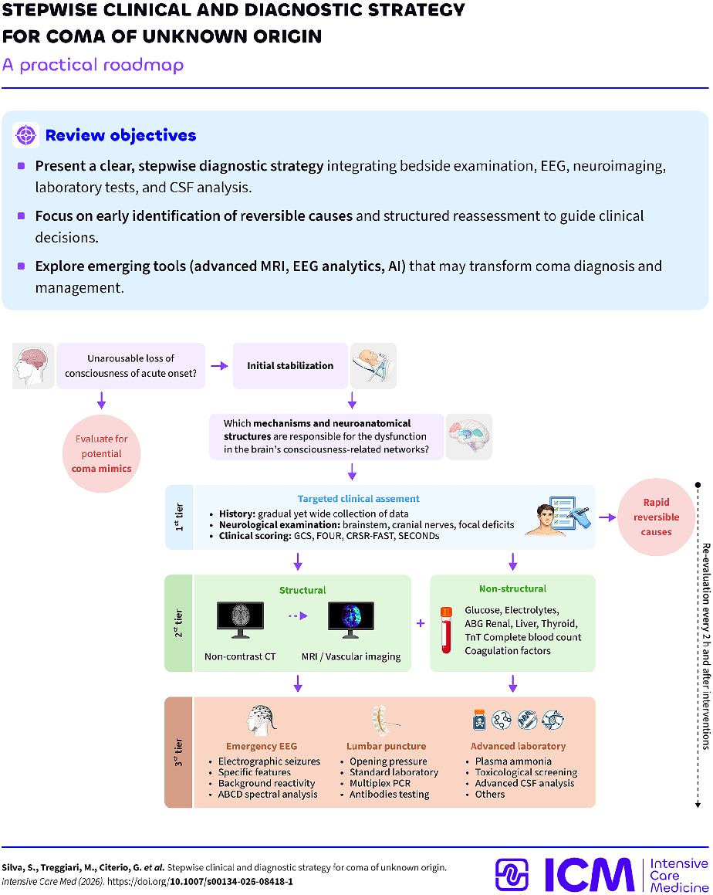
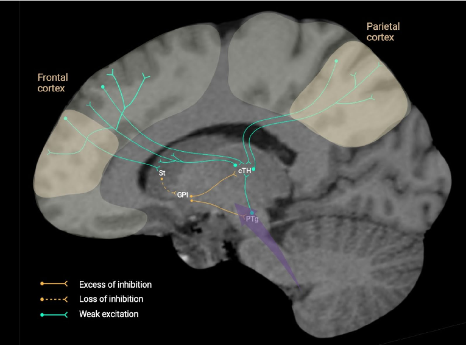
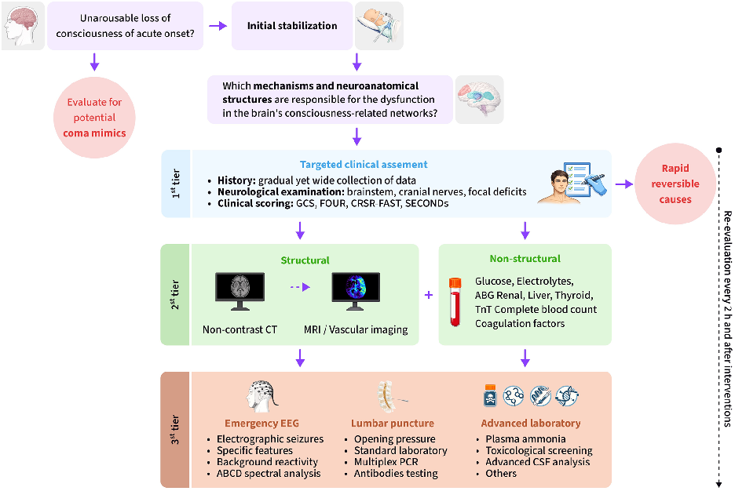
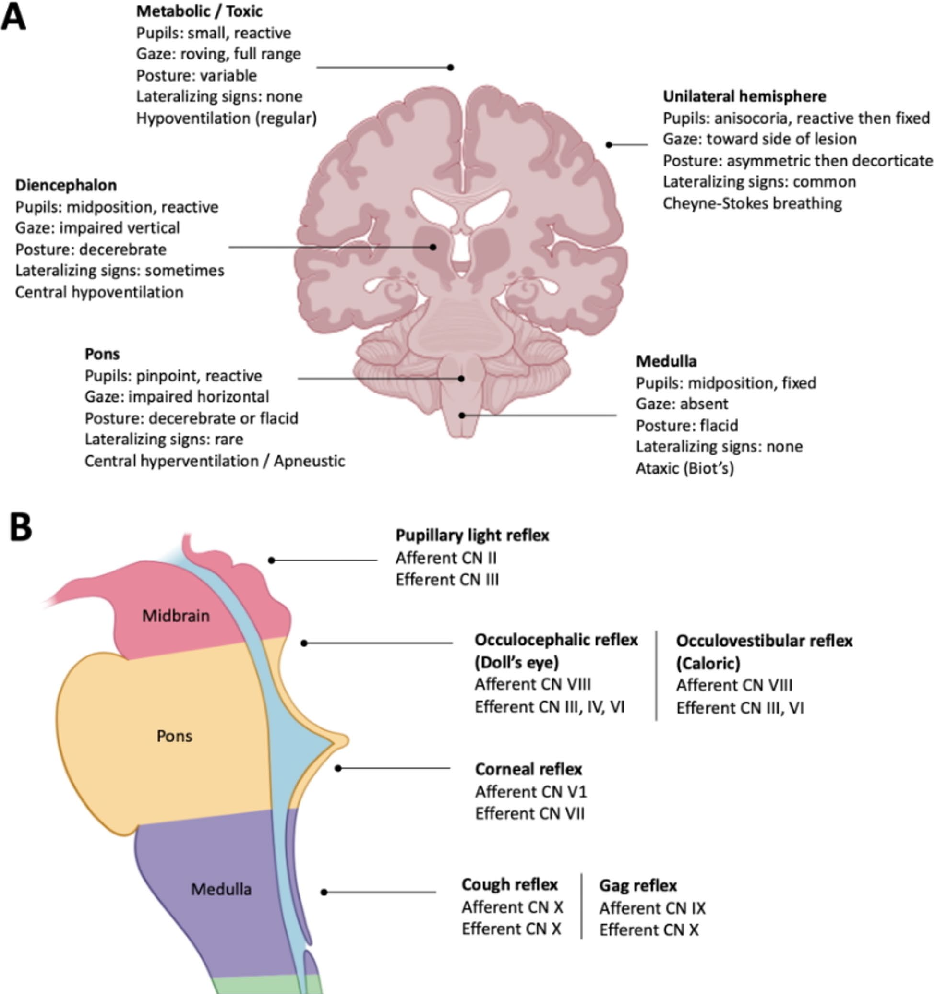
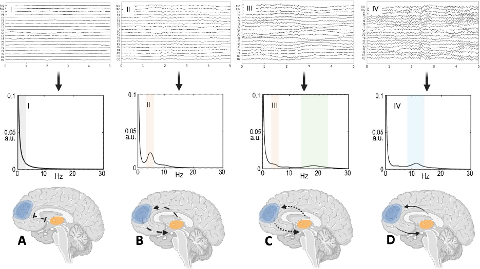
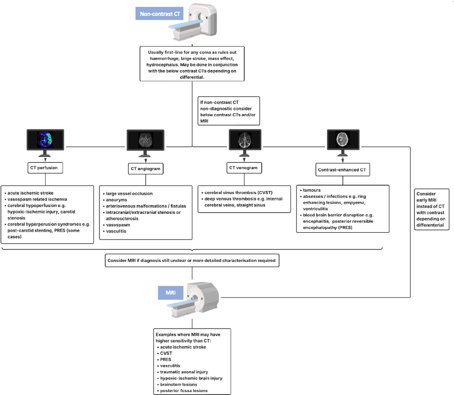
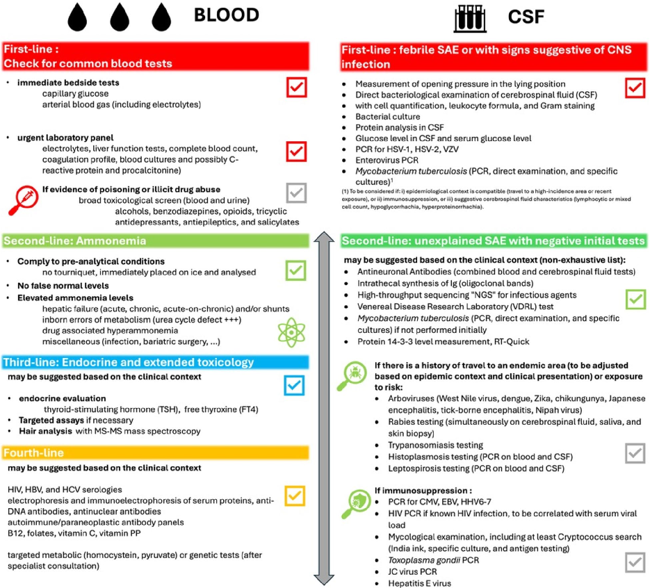

本ページで使用する略語一覧
| 略語 | 正式名称 — 日本語訳 |
| ARAS | Ascending Reticular Activating System — 上行性網様体賦活系 |
| GCS | Glasgow Coma Scale — グラスゴー昏睡スケール |
| FOUR | Full Outline of UnResponsiveness score — 完全無反応アウトライン・スコア |
| EEG | Electroencephalography — 脳波 |
| cEEG | Continuous EEG — 持続脳波モニタリング |
| NCSE | Nonconvulsive Status Epilepticus — 非痙攣性てんかん重積状態 |
| VS/UWS | Vegetative State / Unresponsive Wakefulness Syndrome — 植物状態/無反応性覚醒症候群 |
| MCS | Minimally Conscious State — 最小意識状態 |
| CT | Computed Tomography — コンピュータ断層撮影 |
| MRI | Magnetic Resonance Imaging — 磁気共鳴画像 |
| DWI | Diffusion-Weighted Imaging — 拡散強調画像 |
| DTI | Diffusion Tensor Imaging — 拡散テンソル画像 |
| FLAIR | Fluid-Attenuated Inversion Recovery — 液体抑制反転回復法 |
| CSF | Cerebrospinal Fluid — 脳脊髄液 |
| LP | Lumbar Puncture — 腰椎穿刺 |
| PRES | Posterior Reversible Encephalopathy Syndrome — 可逆性後頭葉白質脳症 |
| CVST | Cerebral Venous Sinus Thrombosis — 脳静脈洞血栓症 |
| LPD | Lateralized Periodic Discharges — 一側性周期性放電 |
| CMD | Cognitive Motor Dissociation — 認知運動解離（隠れた意識） |
| GPi | Globus Pallidus Interna — 淡蒼球内節 |
| CRS-R | Coma Recovery Scale–Revised — 昏睡回復尺度（改訂版） |
| PCR | Polymerase Chain Reaction — ポリメラーゼ連鎖反応 |
| TSH | Thyroid-Stimulating Hormone — 甲状腺刺激ホルモン |
| BUN | Blood Urea Nitrogen — 血中尿素窒素 |
| AI | Artificial Intelligence — 人工知能 |
Visual Abstract

SECTION 1 昏睡とは何か ― 意識の2次元モデル
昏睡の定義と意識の構造
昏睡とは、覚醒（arousal）と認識（awareness）がいずれも完全に失われた、突然発症する一時的な意識障害の病的状態である。Plum と Posner が50年以上前に定義して以来、この概念は神経集中治療の礎となっている。
意識は2つの主要な次元で概念化される。覚醒（arousal）は「起きているという状態」であり、認識（awareness）は「意識的な体験の内容」を指す。昏睡ではこの両者が完全に失われている。昏睡から回復したのちに覚醒は戻るが認識が戻らない状態が植物状態（VS/UWS）であり、さらに目的のある行動の兆候が出始めた状態が最小意識状態（MCS）と定義される。
本レビューが対象とするのは、外傷性脳損傷・心停止後低酸素脳症・大血管閉塞性脳梗塞を除く、原因不明の重篤な昏睡に限定される。これらは別の病態生理学的機序に基づき、確立した管理経路が存在するためである。
SECTION 2 ARAS とメソサーキット ― 覚醒の神経回路
上行性網様体賦活系（ARAS）の役割
覚醒は、脳幹内の異質なコリン作動性・モノアミン作動性・グルタミン酸作動性ニューロン群から構成される ARAS によって媒介される。これらは視床・視床下部・前脳基底部に投射し、皮質の興奮性を調節する。橋出血や びまん性軸索損傷のような脳幹構造への破壊的病変は、これら覚醒経路を断絶することで昏睡を引き起こす。ARAS は覚醒を維持するだけでなく、認識の出現に必要な生理学的基盤を提供している。
認識自体は、保存された皮質機能とその白質連絡（特に中央視床との連絡）に依存する。前頭頭頂連合野の広範な皮質機能障害や両側性視床損傷は、感覚統合と高次認知機能を損ない、認識障害をきたす。
前脳メソサーキット（Fig. 1）
過去20年間の機能的神経画像研究から、昏睡は広範な皮質低代謝・ネットワーク結合性の低下・視床皮質ループの断絶と関連することが明らかになっている。特に、前頭頭頂ネットワークおよび前脳メソサーキットが昏睡において一貫して障害され、その完全性が回復と関連する。
メソサーキットは視床（特に板内核）と線条体・前頭皮質との連絡を中核とする。この大脳皮質—線条体—視床—皮質ループ内において、線条体への直接的または間接的な損傷が、淡蒼球内節（GPi）から視床への抑制性出力を強め、視床皮質流出（前頭領域を含む）をさらに低下させる可能性がある。
臨床管理の観点から重要な点として、メソサーキット機能の回復——特に薬理学的手段（ゾルピデム・アマンタジン・アポモルフィン等）による中央視床とその皮質投射の再活性化——が、遷延性意識障害（VS/UWS・MCS）患者の神経学的回復と関連することが報告されている。

代謝性 vs 構造性昏睡 ― 病態生理の違い
昏睡は大きく2つの機序によって生じる。代謝性・中毒性・感染性原因（電解質異常・低血糖・敗血症など）は、皮質と皮質下構造にわたって神経興奮性とシナプス伝達を全体的に抑制することで意識障害をきたす。これらの状態では ARAS および前頭頭頂—視床メソサーキットは解剖学的には完全に保たれているが機能的に抑制されており、局所的な脳破壊を伴わずに覚醒と情報統合が障害される。このため原則として可逆性が高い。
一方、神経学的原因による昏睡は、意識ネットワークの主要構成要素への直接的な構造的損傷から生じる。ARAS（例：橋出血・びまん性軸索損傷）に影響を与える破壊的病変は覚醒経路を断絶し、両側視床損傷や前頭頭頂連合皮質とその白質連絡の広範な損傷は、皮質統合ハブを切断することで認識を障害する。構造的病変は解剖学的断絶あるいは破壊をもたらし、一般に予後不良で可逆性が低い傾向がある。
SUMMARY 第1章のキーメッセージ
SECTION 3 診断フローチャートと反復評価（Fig. 2）
ステップワイズ診断アルゴリズム
原因不明の新規昏睡に対しては、迅速かつ効率的で構造化された評価が求められる。神経画像や生化学的マーカーへの依存が高まる現代においても、構造化された神経学的診察はベッドサイドでの病変局在同定・診断トリアージ・早期予後推定に不可欠である。
昏睡は動的な臨床状態であり、定期的かつ各介入後に反復評価が必須である。最初の再評価は頻繁に（初期数時間は15〜30分ごとに）行い、状態が安定したのちは臨床的判断により2〜4時間ごとに延長できる。新情報はすべて過去の評価データに統合し、経過変化の可能性を念頭に置く。

初期安定化と病歴聴取
初期昏睡評価では気道・呼吸・循環を優先する。①気道が保護されていなければ必要に応じて確保する。②挿管患者では呼気終末 CO₂を確認しノルモカプニア（PaCO₂ 35〜45 mmHg）を確保する。③心血管不安定があれば等張液による輸液チャレンジを行う。④低血糖を除外・補正する。
プレホスピタルから救急部にかけて、家族・目撃者・カルテから焦点を絞った病歴を収集する。中毒・代謝異常・感染症などの可逆的原因を同定するためである。簡潔かつ系統的な神経学的・全身診察を行い、外傷・薬物使用・発熱・呼吸/肝/腎不全の徴候を確認する。
昏睡のミミックスと交絡因子
昏睡ミミックスを除外することが診断の大前提：緊張病（catatonia）・閉じ込め症候群（locked-in syndrome）・心因性無反応（psychogenic unresponsiveness）はベッドサイド操作と画像検査で鑑別する。
意識を遮蔽しうる交絡因子を同定し対処することが重要である。鎮静薬・鎮痛薬・体温異常・代謝異常は一時的に認識を隠蔽し診断的不確実性をもたらす。反復神経学的評価は、可能な限り鎮静なしで実施し、構造化された意識スコアリングツールを用いるべきである。鎮静・鎮痛薬は診断ワークアップ内の重大な交絡因子となりうるため、鎮静深度を注意深くモニタリングし、必要最小限の量と期間に留めることが重要である。
SECTION 4 可逆的原因の同定と緊急処置（Table 1）
可逆的原因一覧と必要な処置
構造化された神経学的診察に基づく診断ワークアップは早期診断と標的治療を可能にする。以下に示す代謝性・中毒性・感染性・特定の構造的原因は、早期認識と標的治療により意識回復が期待できる。
| 原因 | 必要な処置 |
|---|---|
| 低血糖 | 50%ブドウ糖液 25 g 静注（静脈路確保困難時はグルカゴン筋注/皮下注） |
| 高血糖 | 静脈内輸液・電解質補正・持続インスリン静注 |
| Wernicke 脳症 （チアミン欠乏） |
チアミン 500 mg を1日3回静注（特に低栄養・アルコール患者） |
| 電解質異常 | 重症低ナトリウム血症・高ナトリウム血症などの急速補正 |
| 低酸素/高炭酸ガス | 気道管理と呼吸不全の補正 |
| オピオイド中毒 | ナロキソン 0.4〜1 mg 吸入または静注 |
| ベンゾジアゼピン中毒 | フルマゼニル 0.1 mg/min 静注 |
| 一酸化炭素中毒 | 高流量酸素または高気圧酸素療法 |
| 痙攣 （痙攣性/非痙攣性重積） |
即時抗痙攣薬療法 |
| 感染症 （髄膜炎・脳炎） |
腰椎穿刺と経験的抗菌薬療法 |
| 副腎クリーゼ | ヒドロコルチゾン 100 mg 静注ボーラス → 200 mg/24h持続、等張液急速輸液、低血糖補正 |
| 粘液水腫性昏睡 | レボチロキシン負荷量 200〜400 mcg 静注、グルココルチコイド静注、包括的支持療法 |
SECTION 5 神経学的診察と意識スコアリング（Fig. 3）
昏睡診察の系統的アプローチ
昏睡患者の診察には、意識レベル・脳幹反射・運動反応・呼吸パターンの系統的評価が必要である（Fig. 3）。GCS は広く使用されているが、挿管患者における言語反応の評価と脳幹機能評価に限界がある。この限界を克服するために、眼球追跡・呼吸パターン・脳幹反射を組み込んだ FOUR スコアの採用が進んでいる。
臨床徴候の組み合わせ（特に瞳孔サイズと反応性・注視偏倚・姿勢）は、単独の徴候よりも昏睡の局所的大脳原因を示すうえで有効である。ICU において昏睡と関連する意識障害（VS/UWS・MCS）を早期かつ正確に鑑別するために、CRS-R の短縮版（CRSR-FAST・SECONDs）が最近開発されている。
覚醒と反応性の変動により、単回評価に基づく診断は誤診につながりうるため、反復評価が不可欠である。

FOUR スコア vs GCS ― 比較（Table 2）
| 項目 | GCS | FOUR スコア |
|---|---|---|
| 評価ドメイン | 開眼・言語反応・運動反応 | 眼反応・運動反応・脳幹反射・呼吸パターン |
| スコア範囲 | 3〜15（3サブスケール） | 0〜16（各 0〜4 の4サブスケール） |
| 脳幹機能評価 | 間接的 | 瞳孔・角膜・咳反射の直接評価 |
| 微細な認識の徴候 | 限定的 | 視覚追跡を直接評価 ― LIS・MCS の診断に有用 |
| 呼吸評価 | 評価しない | 自発呼吸パターンを評価 |
| 挿管患者での有用性 | 限定的 | 完全適用可能 |
| 予後予測能 | 検証済み；微細な脳幹機能低下への感度は低い | ICU 予後推定においてしばしば優れる |
FOUR スコアは優れた評価者間一致度を示し、非常に低い GCS スコアの患者において GCS よりも予後予測能が優れることが示されている。
SUMMARY 第2章のキーメッセージ
SECTION 6 電気的痙攣発作と NCSE の検出
なぜ EEG が昏睡評価に不可欠か
EEG は病因を問わず全ての昏睡の診断・予後評価における中核的要素である。ICU で検出される痙攣発作の大多数は臨床的に無症状であり、このことが適時な診断と管理のために持続 EEG（cEEG）モニタリングの重要性を際立たせる。混合昏睡患者集団において、cEEG は非痙攣性発作を最大 18% の頻度で検出する。早期 EEG 所見（記録開始後1時間以内に得られるもの）はすでに有意義な発作リスク層別化情報を提供するが、発作検出にはしばしば数時間または24時間超の長時間 EEG モニタリングが必要となる。
NCSE 検出率（cEEG）
適応スコア
発作リスク
2HELPS2B スコアによる cEEG モニタリング期間の決定
2HELPS2B スコアは初回スクリーニング EEG から得られる変数をもとに、入院患者の発作リスクを層別化するものである。
| 2HELPS2B スコア | 発作リスク | 推奨 EEG モニタリング期間 |
|---|---|---|
| 0点 | < 5% | 短時間記録（約1時間）で適切 |
| 1点 | 中程度 | 約12時間のモニタリングが有益 |
| ≥ 2点 | 高リスク | 持続 EEG（≥24時間）が一般的に妥当 |
高い痙攣バーデン（累積持続時間または最高てんかん様活動量として定量化）は不良な神経学的転帰と関連する。ACNS および ESICM は、痙攣バーデンの管理を最適化するために昏睡患者の cEEG を検討することを推奨している。ただし、cEEG ガイド下の抗てんかん治療プロトコルが短期・長期神経学的転帰を改善するかは未解明のままである。
SECTION 7 ABCD 分類 ― 視床皮質断絶の EEG 評価（Fig. 4）
ベッドサイド EEG による視床皮質ネットワーク完全性の評価
ベッドサイド EEG が視床皮質ネットワーク完全性を評価できるのは、上行性視床投射と視床皮質ループによって形成される大規模皮質振動を非侵襲的に捉えられるからである。視床と皮質の機能的結合は覚醒と認識の維持に中核的役割を果たすため、ベッドサイド EEG 記録は昏睡重篤度の迅速かつ反復可能な指標を提供する。
病因を問わず、昏睡が深くなるにつれてデルタ活動が優位となりより緩徐・持続的になる。さらに増悪すると背景活動は不連続となり、バースト—サプレッションへと進展し、バースト間隔が長くなるほど重篤度が増す。電気的大脳不活動あるいは等電位沈黙まで進行しうる。潜在的な交絡因子のない状態での抑制またはバースト—サプレッション背景（周期性放電の有無を問わず）は、不良転帰の予測因子とみなされる。

ABCD EEG 分類の臨床的意味
ABCD モデルは、EEG スペクトル特徴と視床皮質ネットワークの機能状態を結びつける概念的・実証的な橋梁を提供する。
ABCD EEG 分類は、外傷性・無酸素虚血性・くも膜下出血などの特定の構造的脳損傷の文脈において、ABCD グレードの経時的改善が神経学的回復と並行するという最近のエビデンスによって支持されている。
離散的 EEG パターンと昏睡病因
いくつかの特異的な EEG パターンは昏睡の病因に関する情報を提供し、治療介入や他の画像モダリティによる追加評価を優先するための指針となる。
| EEG パターン | 示唆する病態 | 臨床的意義 |
|---|---|---|
| 三相波を伴う 全般性周期性放電 |
中毒性/代謝性脳症 | 本質的にてんかん性ではないが、代謝異常の指標として重要 |
| LPD （一側性周期性放電） |
急性局所皮質病変 | 虚血性ペナンブラ/病変周囲域を反映；興奮毒性と NCSE リスクの指標 |
| 両側性周期性放電 | 両側性または びまん性構造性疾患 | 広範な脳病変を示唆 |
| 後頭優位アルファ昏睡 | 脳幹病変（低酸素性昏睡でも） | ABCD 分類のパターン D「アルファ昏睡」との鑑別が必要 |
SUMMARY 第3章のキーメッセージ
SECTION 8 CT vs MRI ― 選択の基準（Fig. 5）
臨床所見に基づく画像モダリティの選択
神経画像モダリティの選択において、臨床診察はいまだ礎石となる。ベッドサイドの神経学的所見は診断仮説を形成するだけでなく、疑われる基礎病理に応じて CT と MRI のどちらを選択すべきかを導く。

CT の適応と限界
局所神経学的欠損を伴う昏睡では、構造的脳病変を緊急除外しなければならない。このような状況で、ACR および Emergency Neurological Life Support は、迅速な取得・広い利用可能性・安全性・急性出血/圧排効果/水頭症/大きな領域梗塞への高い感度から、非造影 CT を第一選択の画像モダリティとして位置づけている。CT 所見が不確定な場合、病変のさらなる特徴付けのために MRI が続けて示される。
CT が正常でも多くの重篤な病因は除外できない：早期虚血性変化・PRES・静脈血栓症・脳炎・びまん性軸索損傷はしばしば非造影 CT では検出されない。造影 CT（CT アンギオグラフィーや CT パーフュージョン）が必要な場面：①CT アンギオは脳底動脈血栓が疑われる患者に緊急実施（脳幹の CT パーフュージョンは判読が困難）、②CT ベノグラフィーは静脈洞血栓症の評価に要する、③造影は動脈瘤・AVM・腫瘍・脳膿瘍を検出しうる。
MRI の優位性と適応
MRI は利用可能性の制約と長い撮像時間により主に亜急性評価に用いられるが、CT に対して優れた感度を提供する。DWI は CT では可視化されない早期虚血性変化および PRES に特徴的な血管性浮腫の検出に非常に感度が高い。FLAIR は炎症性病変と脳浮腫の同定に有用である。
より高度な拡散 MRI（dMRI）、特に拡散テンソル画像（DTI）は、組織環境における水分子の動きを特性化することによって脳の構造的完全性を評価し、損傷後に変化する。これにより病態生理学的な重要な知見が得られ、神経学的回復の予測と予後推定に役立つ。
脳底動脈血栓など後頭蓋窩の臨床的異常が観察される場合は、後頭蓋窩構造の詳細評価を優先する画像戦略が求められ、臨床的安定が得られれば DWI を含む MRI が一般的に優先される。
CT vs MRI ― 選択指針まとめ
| モダリティ | 適応 | 強み | 限界 |
|---|---|---|---|
| 非造影 CT | 初期安定化後、構造的原因が疑われる昏睡患者に緊急実施 | 迅速・広く利用可能・出血/圧排効果/水頭症に高感度 | 早期虚血・PRES・静脈血栓症・脳炎・DAI を見逃しうる |
| MRI | 原因不明の亜急性評価；後頭蓋窩病変疑い；既知の頭蓋内疾患（可能時は優先） | 虚血・小病変・後頭蓋窩病変への優れた感度 | 撮像時間が長い；利用可能性に制約；不安定患者には困難 |
| 非構造性原因疑い （中毒性・代謝性） |
予期しない構造的病変を除外するため画像は任意 | MRI は適応があれば微細な構造変化を同定しうる | |
SUMMARY 第4章のキーメッセージ
SECTION 9 ステップワイズ血液検査アプローチ（Fig. 6）
第1ステップ：緊急ベッドサイド＋緊急検査パネル
原因不明の昏睡における検査評価には、結果を得るまでの時間と即座の治療判断の必要性のバランスを取ることが求められる。第1ステップとして、ベッドサイド検査（毛細血管血糖と動脈血ガス：電解質含む）と緊急検査パネル（クレアチニン・BUN・肝機能・全血球算定・凝固能・血液培養、必要に応じて CRP・プロカルシトニン）の両方が実施されその結果が確認されていることを確保することが必須である。

第2ステップ：血中アンモニア・内分泌・毒物スクリーニング
明確な診断方向が得られない場合、第2ステップとして血漿アンモニアを測定する（結果は理想的には1時間以内に得られるべきである）。高アンモニア血症は肝不全（急性肝不全・慢性肝疾患・急性増悪）、あるいは尿素サイクル異常症（オルニチントランスカルバミラーゼ欠損症など）のような稀な先天性代謝異常を示唆し、緊急治療介入が必要である。高アンモニア血症に低酸素の明確な原因のない乳酸上昇が伴う場合は、ミトコンドリア病を疑う。偽高値は起こりうる（疑わしい場合は再測定）が偽正常値は生じない。
患者の病歴と臨床評価に基づき、または有意な診断指標がない場合に、内分泌評価（TSH・FT4、アジソン病危機が疑われる場合はコルチゾール）を行う。中毒性脳症では薬物摂取や物質乱用の病歴がないこともあるため、幅広い毒物学的スクリーニング（血液・尿）が必要である。対象薬物はアルコール類・ベンゾジアゼピン・オピオイド（ブプレノルフィン・メサドン）・三環系抗うつ薬・抗てんかん薬（プレガバリン）・MDMA・ケタミン・コカイン・GHB・アンフェタミン系・サリチル酸などである。
SECTION 10 腰椎穿刺と CSF 解析
LP の適応と実施のタイミング
適時に安全に実施される腰椎穿刺（LP）は、多モダリティ診断経路の一環として診断情報を提供し直接治療を導く。LP は原因不明の昏睡評価において礎石をなし、特に CNS 感染症や炎症性疾患の疑いが高い場合（例：亜急性または急性発症の頭痛・発熱・精神状態変化、随伴徴候の有無を問わず）に重要である。
LP の禁忌アセスメントは処置前に常に行う。LP 実施前の神経画像による除外が推奨されるのは、重篤な意識障害と脳ヘルニア疑い・局所神経学的欠損・新規発症痙攣・免疫不全状態の患者に限定される。
CSF 解析の鑑別診断における役割
複数の CSF パラメーター（開口圧・鑑別を含む細胞数・血清同時測定を伴うグルコース・蛋白・乳酸）が細菌性感染症とウイルス性感染症の鑑別、さらに非感染性病態の示唆に役立つ。グラム染色と細菌培養は系統的に実施し、免疫不全患者にはインド墨汁染色を追加する。
| 病態 | 細胞増多 | 蛋白 | グルコース | 備考 |
|---|---|---|---|---|
| 細菌性髄膜炎 | 多核球優位の著明な増多 | 高値 | 低値 | 微妙な異常のみのこともある |
| ウイルス性脳炎 | リンパ球優位の中等度増多 | 軽度上昇 | 正常 | CSF 細胞増多なしでも否定されない |
| 自己免疫性脳炎 | 軽度リンパ球性 | 軽度上昇 | 正常 | IgG 合成↑・オリゴクローナルバンド |
| 悪性浸潤 | 変動 | 変動 | 低値のことも | 細胞診・フローサイトメトリーで確認 |
多重 PCR パネルと自己免疫性脳炎の検索
PCR 検査はウイルス・細菌性病原体の検出に革命をもたらし、ヘルペスウイルス・エンテロウイルス・結核菌の迅速かつ感度の高い同定を可能にした。BioFire® FilmArray 髄膜炎/脳炎パネルは14種の一般的な細菌・ウイルス・真菌病原体を約1時間で同時検出する。臨床研究では mPCR が標的治療までの時間を短縮し、不要な抗菌薬曝露を減少させ、感染性と非感染性昏睡の早期鑑別を促進することが示されている。
ただし、制限事項として偽陽性（特にヘルペスウイルス：HHV-6 など臨床的意義が不明瞭なもの）や偽陰性（特に HSV-1）が報告されている。mPCR 結果は必ず臨床的特徴・従来の微生物検査・神経画像と統合して解釈しなければならない。
自己免疫・傍腫瘍性脳炎では、CSF 細胞増多（軽度リンパ球性）・蛋白軽度上昇・髄腔内 IgG 合成・オリゴクローナルバンドが認められることがある。特に抗 NMDA 受容体抗体は血清より CSF の方が感度・特異度が高い。血清と CSF の両方で検証済みの細胞ベースアッセイを用いた自己抗体検査を行う（免疫療法開始前が理想的だが、強く疑われる場合は治療を遅らせない）。初回結果陰性でも疑いが高い場合は再検を検討する。
CSF 解析の実践的指針まとめ
- CNS 感染症または炎症性疾患が疑われる場合、CSF 解析は原因不明昏睡の診断ワークアップにおける礎石である。LP 前に禁忌を常にアセスメントする
- CSF 細胞増多の欠如はウイルス性・自己免疫性脳炎を否定しない
- 多重 PCR 結果は偽陽性・偽陰性が生じうるため、臨床文脈と統合して解釈する
- 自己免疫性脳炎疑いでは血清と CSF の対を用いた抗体検査を実施する
- 初回 CSF 所見が非診断的で臨床的疑いが高い場合は再 LP を検討する
SUMMARY 第5章のキーメッセージ
SECTION 11 認知運動解離（CMD）と隠れた意識の検出
CMD（隠れた意識）とは何か
刺激ベース fMRI と EEG の両方が認知運動解離（CMD）——臨床的には無反応と診断されているが、これらの神経技術を通じた指示に応答して特定の脳領域内で活動を意図的に調節する能力を示す患者——を検出しうる。CMD と安静時脳活動はいずれも転帰および昏睡からの離脱と関連することが示されている。
ただし注意点として、患者の動き・鎮静・中毒代謝性障害が結合性や CMD 検出を人為的に低下させる可能性がある。保存された結合性や CMD の存在は臨床的改善のための基盤が保たれていることを示す一方、機能的結合性の低下や CMD の欠如は慎重な解釈が必要である。広範な臨床実践への統合には取得・解析のさらなる改善と検証が必要である。
昏睡の多くの研究が、離散的な症候群ラベルは生物学的現実に対応しないことを示している。マルチモーダル評価——神経生理学・神経画像・生化学プロファイリング・ゲノミクス/オミクス・軌跡モデリングを統合——は患者を機械論的に整合した状態にマッピングでき、生物学的複雑性をより正確に捉え、検査と治療を導く。トランスフォーマーベースの基盤モデルにより駆動されるデジタルツインは、臨床ノート・波形・画像・オミクスデータで学習し潜在的な状態を推定し、反事実的介入をシミュレートし回復軌跡を予測する。これらのアプローチは昏睡管理を症候群分類（表現型）から機序的理解（内表現型）へ、エピソード的評価から連続モニタリングへ、集団ベースのプロトコルから個別化精密医療へと変革しうる。
ポータブル MRI は構造・拡散画像を ICU に導入し、不安定患者での連続評価を可能にする新興ドメインである。また、連続 2D 加速度計/アクチグラフィー・ウェアラブル・顔/姿勢/動きの動画解析は、覚醒と予後の定量的評価をもたらし、高時間分解能での行動特徴解析によって臨床的に潜在的な現在と将来の状態・治療反応性を明らかにし、介入の実行可能な時間窓を提供する。
SUMMARY 第6章のキーメッセージ
出典：Silva S, Treggiari M, Citerio G, et al. Stepwise clinical and diagnostic strategy for coma of unknown origin. Intensive Care Med. 2026.
DOI：https://doi.org/10.1007/s00134-026-08418-1
本資料は教育目的で作成したサマリーです。診断・治療方針の決定には必ず原典を参照してください。
制作：ICU 関谷